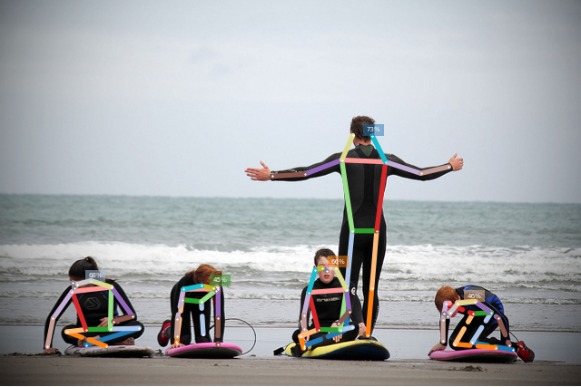

Sven Kreiss, 2020
Prediction¶
Use OpenPifPaf from the command line to run multi-person pose estimation on images. Below is also a short intro to running prediction on videos.
Run openpifpaf.predict on an image:
!python -m openpifpaf.predict coco/000000081988.jpg --image-output --json-output --debug
DEBUG:__main__:neural network device: cpu
DEBUG:openpifpaf.network.heads:cif = [0], caf = [1]
DEBUG:openpifpaf.decoder.factory:head names = ('cif', 'caf', 'caf25')
DEBUG:openpifpaf.visualizer.base:cif: indices = []
DEBUG:openpifpaf.show.painters:color connections = False, lw = 2, marker = 6
DEBUG:openpifpaf.visualizer.base:caf: indices = []
DEBUG:openpifpaf.show.painters:color connections = False, lw = 2, marker = 6
DEBUG:openpifpaf.show.painters:color connections = True, lw = 6, marker = 3
DEBUG:openpifpaf.transforms.pad:valid area before pad: [ 0. 0. 639. 426.], image size = (640, 427)
DEBUG:openpifpaf.transforms.pad:pad with (0, 3, 1, 3)
DEBUG:openpifpaf.transforms.pad:valid area after pad: [ 0. 3. 639. 426.], image size = (641, 433)
DEBUG:openpifpaf.decoder.generator.generator:nn processing time: 1.061s
DEBUG:openpifpaf.decoder.generator.generator:parallel execution with worker <openpifpaf.decoder.generator.generator.DummyPool object at 0x7f5bd696db10>
DEBUG:openpifpaf.decoder.generator.cifcaf:initial annotations = 0
DEBUG:openpifpaf.decoder.cif_hr:target_intensities 0.008s
DEBUG:openpifpaf.decoder.cif_seeds:seeds 709, 0.002s (C++ 0.001s)
DEBUG:openpifpaf.decoder.caf_scored:scored caf (1339, 1296) in 0.004s
DEBUG:openpifpaf.decoder.occupancy:shape = (17, 216, 320), min_scale = 2
DEBUG:openpifpaf.decoder.generator.cifcaf:annotations 5, 0.046s
DEBUG:openpifpaf.decoder.occupancy:shape = (17, 194, 283), min_scale = 2
DEBUG:openpifpaf.decoder.nms:nms = 0.003s
INFO:openpifpaf.decoder.generator.cifcaf:5 annotations: [14, 16, 17, 16, 15]
DEBUG:openpifpaf.decoder.generator.generator:time: nn = 1.061s, dec = 0.053s
INFO:__main__:batch 0: coco/000000081988.jpg
DEBUG:__main__:json output = coco/000000081988.jpg.predictions.json
DEBUG:__main__:image output = coco/000000081988.jpg.predictions.png
This command produced two outputs: an image and a json file.
You can provide file or folder arguments to the --image-output and --json-output flags.
Here, we used the default which created these two files:
coco/000000081988.jpg.predictions.png
coco/000000081988.jpg.predictions.json
Here is the image:

And here is the json output:
!python -m json.tool coco/000000081988.jpg.predictions.json
[
{
"keypoints": [
0.0,
-3.0,
0.0,
0.0,
-3.0,
0.0,
0.0,
-3.0,
0.0,
388.6,
149.4,
0.87,
410.08,
149.7,
0.73,
376.76,
176.22,
0.87,
425.65,
177.54,
0.87,
335.6,
192.22,
0.86,
463.58,
191.29,
0.85,
300.04,
194.49,
0.88,
494.45,
183.96,
0.87,
387.99,
254.67,
0.84,
414.94,
254.72,
0.91,
382.17,
315.62,
0.7,
410.01,
318.07,
0.99,
381.87,
362.75,
0.29,
405.22,
369.85,
0.75
],
"bbox": [
289.18,
142.4,
216.91,
243.23
],
"score": 0.733,
"category_id": 1
},
{
"keypoints": [
81.78,
317.29,
0.6,
85.3,
313.22,
0.78,
80.19,
312.1,
0.33,
99.85,
309.14,
0.79,
0.0,
-3.0,
0.0,
123.0,
317.18,
0.86,
78.91,
321.17,
0.78,
146.09,
348.52,
0.78,
58.28,
350.78,
0.78,
124.86,
354.53,
0.69,
52.18,
382.47,
0.78,
121.57,
363.05,
0.73,
94.3,
363.63,
0.73,
153.08,
362.21,
0.63,
73.61,
366.02,
0.68,
94.22,
380.86,
0.54,
116.73,
381.85,
0.42
],
"bbox": [
46.49,
306.15,
114.13,
83.72
],
"score": 0.687,
"category_id": 1
},
{
"keypoints": [
359.89,
299.08,
0.56,
363.57,
294.22,
0.59,
354.82,
294.77,
0.58,
370.09,
296.68,
0.55,
347.56,
297.82,
0.78,
380.37,
318.59,
0.72,
340.45,
322.22,
0.84,
384.69,
342.85,
0.6,
334.77,
347.95,
0.74,
372.99,
357.23,
0.52,
335.12,
362.72,
0.74,
375.05,
363.53,
0.67,
350.59,
363.54,
0.75,
388.25,
361.11,
0.34,
330.83,
371.03,
0.55,
334.89,
381.55,
0.31,
334.55,
384.24,
0.27
],
"bbox": [
324.2,
292.08,
70.77,
98.82
],
"score": 0.645,
"category_id": 1
},
{
"keypoints": [
493.2,
348.52,
0.25,
495.89,
345.12,
0.32,
489.55,
345.98,
0.2,
504.53,
334.61,
0.39,
0.0,
-3.0,
0.0,
522.68,
332.36,
0.57,
490.49,
333.07,
0.41,
549.31,
351.24,
0.49,
488.25,
352.99,
0.35,
561.04,
380.62,
0.31,
488.01,
376.64,
0.46,
540.84,
344.21,
0.57,
520.91,
346.19,
0.44,
521.27,
377.62,
0.77,
501.32,
379.69,
0.47,
565.13,
385.18,
0.44,
546.0,
383.56,
0.18
],
"bbox": [
483.62,
327.0,
87.72,
64.39
],
"score": 0.454,
"category_id": 1
},
{
"keypoints": [
237.64,
320.42,
0.25,
238.84,
316.65,
0.16,
234.91,
318.16,
0.29,
0.0,
-3.0,
0.0,
222.43,
315.36,
0.51,
239.52,
317.26,
0.72,
201.85,
318.92,
0.6,
240.3,
350.9,
0.59,
195.11,
352.75,
0.37,
240.05,
380.3,
0.48,
193.3,
376.3,
0.34,
221.76,
332.86,
0.56,
200.01,
331.03,
0.47,
223.93,
368.52,
0.36,
195.41,
371.26,
0.33,
0.0,
-3.0,
0.0,
194.78,
378.61,
0.21
],
"bbox": [
189.05,
312.15,
55.86,
72.19
],
"score": 0.436,
"category_id": 1
}
]
Optional Arguments¶
--show: show interactive matplotlib output--debug-images: enable debug messages and debug plots
Full list of arguments is available with --help: CLI help for predict.
Video¶
Requires OpenCV. The --video-output option also requires matplotlib.
python3 -m openpifpaf.video --source myvideotoprocess.mp4 --video-output --json-output
Replace myvideotoprocess.mp4 with 0 for webcam0 or other OpenCV compatible sources.
Full list of arguments is available with --help: CLI help for video.
Image credit: “Learning to surf” by fotologic which is licensed under CC-BY-2.0.